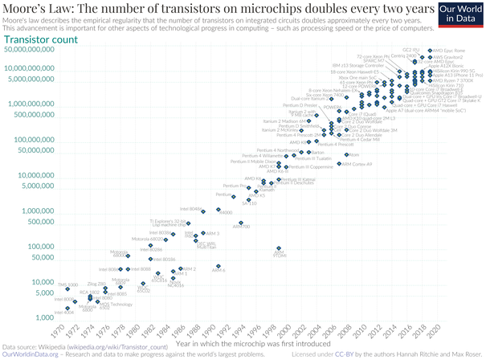

Moore à dans «l’interview» du magazine «Electronics» fait connaître que depuis 1965, date de création des semi-conducteurs, la complexité de ceux-ci doublait tout les 2 ans, cette constatation fut rapidement appelé « loi de Moore » ou « 1er loi de Moore », puisqu’en 1975, Moore reviendra sur cette loi en adressant que le nombre de transistors des microprocesseurs double toutes les 2 ans, cette prédiction s’est révélée exacte puisque entre 1971 et 2001, le nombre de transistors doubla toutes les 1,96 ans.
Malheureusement, cette «loi» pourrait ne plus être valable en sachant que nous commençons a arriver au limite possible de transistor dans une même puce electronique.
